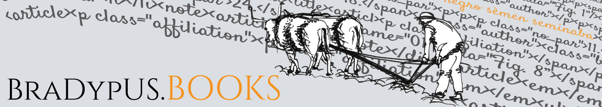

<!DOCTYPE html >
<html>
<head>

  <!-- Print metadata -->
  <!-- HTML metadata -->
  <meta http-equiv="content-type" content="text/html; charset=utf-8" />
  <meta name="robots" content="index, follow" />
  <title>E-Review 4-2016. Made in Emilia Romagna. Produzione e consumo alimentare tra frugalità e abbondanza</title>
  <meta name="description" content="Annale 2016 di E-Review, la Rivista degli Istituti Storici dell&rsquo;Emilia Romagna in Rete. In questo numero il Dossier &egrave; intitolato: &ldquo;Made in Emilia Romagna. Produzione e consumo alimentare tra frugalit&agrave; e abbondanza&rdquo; ed &egrave; curato di Stefano Magagnoli e Agnese Portincasa." />
  <meta name="keywords" content="editoria, pubblicazioni, libri, libri elettronici, ebook, bradypus" />
  <meta lang="it" />
  <meta name="viewport" content="width=device-width, initial-scale=1.0,shrink-to-fit=no">
  <meta name="generator" content="BraDyCMS 4.5.4">
  <link rel="alternate" href="ereview2016.html" hreflang="it" />
  
  <!-- Open Graph metadata -->
  <meta property="og:title" content="E-Review 4-2016. Made in Emilia Romagna. Produzione e consumo alimentare tra frugalità e abbondanza" />
  <meta property="og:description" content="Annale 2016 di E-Review, la Rivista degli Istituti Storici dell’Emilia Romagna in Rete. In questo numero il Dossier è intitolato: “Made in Emilia Romagna. Produzione e consumo alimentare tra frugalità e abbondanza” ed è curato di Stefano Magagnoli e Agnese Portincasa." />
  <meta property="og:url" content="https://books.bradypus.net/ereview2016" />
  <meta property="og:image" content="https://books.bradypus.net/sites/default/images/articles/orig/163.jpg" />
  <meta property="og:image:width" content="1000" />
  <meta property="og:image:height" content="1335" />
  
  <!-- Feed links -->
  <link rel="alternate" type="application/rss+xml" title="RSS" href="feed/rss" />
  <link rel="alternate" type="application/atom" title="RSS" href="feed/atom" />
  <!-- Dublin Core metadata tags -->
  <meta name="DC.Type" content="Text" />
  <meta name="DC.Format" content="text/html" />
  <meta name="DC.Identifier" content="163"/>
  <meta name="DC.Identifier.URI" scheme="URI" content="https://books.bradypus.net/ereview2016" />
  <meta name="DC.Title" content="E-Review 4-2016. Made in Emilia Romagna. Produzione e consumo alimentare tra frugalità e abbondanza" />
  <meta name="DC.Description" content="Annale 2016 di E-Review, la Rivista degli Istituti Storici dell&rsquo;Emilia Romagna in Rete. In questo numero il Dossier &egrave; intitolato: &ldquo;Made in Emilia Romagna. Produzione e consumo alimentare tra frugalit&agrave; e abbondanza&rdquo; ed &egrave; curato di Stefano Magagnoli e Agnese Portincasa." />
  <meta name="DC.Language" scheme="ISO639-1" content="it" />
  <meta name="DC.Creator" content="e-review.it" />
  <meta name="DC.Creator.PersonalName" content="e-review.it" />
  <meta name="DC.subject" scheme="RFC3066" content="editoria, pubblicazioni, libri, libri elettronici, ebook, bradypus" />
  <meta name="DC.Date" scheme="W3CDTF" content="2017-05-28" />
  <meta name="DC.Date.created" scheme="ISO8601" content="2017-05-28" />
  <meta name="DC.Date.issued" scheme="ISO8601" content="2017-05-28" />
  <meta name="DC.Date.modified" scheme="ISO8601" content="2020-01-07 07:06:06" />

  <!-- Load site favicon -->
  <link rel="shortcut icon" href="sites/default/css/favicon.png.html">
  <link rel="stylesheet" href="frontLibs/bootstrap/dist/css/bootstrap.min.css">
  <link rel="stylesheet" href="https://fonts.googleapis.com/css?family=Cinzel">
  <link rel="stylesheet" href="https://fonts.googleapis.com/css?family=Fanwood+Text:400,400italic">
  <script src="https://use.fontawesome.com/releases/v5.6.3/js/all.js"></script>
  <link rel="stylesheet" href="sites/default/css/styles.css">

</head>

<body>

  <!-- Main body -->
  <div class="body">

    <div class="header mb-4">
      <a href="index.html"
         title="Pagina principale"
         >
        
      </a>
    </div>

    

    <!-- Start of conditional displaying of content, depending on context (html.getContext) -->
    <!-- 1. Context is "home";  this is the site's home page -->
    
      <div class="container">
                  

<div class="article-main row">

  <div class="article-content col-md-8">
    <div class="section">

      <div class="article">
        <h4 class="text-muted">Collana E-Review. Annali</h4>        <h1>E-Review 4-2016. Made in Emilia Romagna. Produzione e consumo alimentare tra frugalità e abbondanza<br>
          <small>e-review.it</small></h1>
        <p class="text-muted">(BraDypUS Communicating Cultural Heritage, Roma 2017)</p>

        <div class="content"><p>Annale 2016 di E-Review, la Rivista degli Istituti Storici dell&rsquo;Emilia Romagna in Rete. In questo numero il Dossier &egrave; intitolato: &ldquo;Made in Emilia Romagna. Produzione e consumo alimentare tra frugalit&agrave; e abbondanza&rdquo; ed &egrave; curato di Stefano Magagnoli e Agnese Portincasa.</p>
<p>&nbsp;</p>
<p>&Egrave; possibile attivare abbonamenti della durata minima di tre<br />anni, con lo sconto del 50% del prezzo di copertina. Per maggiori informazioni si prega di contattare l&rsquo;editore (<a href="mailto:info@bradypus.net">info@bradypus.net</a>).</p>
<hr />
<h3>DOSSIER</h3>
<p><em>Made in Emilia Romagna. Produzione e consumo alimentare tra frugalit&agrave; e abbondanza</em>, a cura di Stefano Magagnoli e Agnese Portincasa</p>
<ul>
<li><em>Introduzione</em>, Stefano Magagnoli, Agnese Portincasa</li>
<li><em>La grande trasformazione. L&rsquo;evoluzione dei modelli di consumo nel Novecento. Intervista a Paolo Capuzzo, Universit&agrave; di Bologna</em>,&nbsp;Stefano Magagnoli, Agnese Portincasa</li>
<li><em>Dalla penuria di guerra alla societ&agrave; del benessere. Il caso della Francia.&nbsp;Intervista a Jean Pierre Williot, Universit&agrave; di Tours</em>, Stefano Magagnoli, Agnese Portincasa</li>
<li><em>Studi di genere alimentare. Le cooperative di consumo in provincia di Bologna (1915-1945)</em>, Tito Menzani</li>
<li><em>Comuni in guerra. Amministrazione, popolazione e risorse</em><br /><em>nella Bassa Romagna</em>, Elisa Dondi</li>
<li><em>Una regione da copertina. Manifesti, fiere e prodotti</em><br /><em>nell&rsquo;Emilia Romagna degli anni Venti e Trenta</em>, Daniela Morsia</li>
<li><em>Frutta rossa. L&rsquo;agricoltura e l&rsquo;industria di derivazione alimentare nel vignolese: 1935-1945</em>, Daniel Degli Esposti</li>
<li><em>Sfamare Torino. Le mense aziendali Fiat di fronte alle emergenze alimentari della guerra</em>, Daniela Adorni, Stefano Magagnoli</li>
<li><em>Spunti da una ricerca in corso. &ldquo;La Rassegna. Pubblicazione&nbsp;</em><em>Mensile della Camera di Commercio di California&rdquo;</em>, Federico Chiaricati</li>
</ul>
<p>RUBRICHE</p>
<p>#fuoridossier</p>
<ul>
<li><em>Il ruolo economico del Comitato di liberazione nazionale</em><br /><em>dell&rsquo;Emilia-Romagna dopo la Liberazione, 1945-1946</em>, Luca Neretti</li>
</ul>
<p>#formazione</p>
<ul>
<li><em>Cibi di pace, cibi di guerra: la storia dell&rsquo;alimentazione al liceo</em>, Maria Raffaella Cornacchia</li>
<li><em>&ldquo;Il tempo non guarisce le ferite&rdquo;: un laboratorio didattico su guerra, occupazione e Resistenza a Collecchio (1943-45)</em>, Teresa Malice</li>
</ul>
<p>#patrimonio</p>
<ul>
<li><em>Jewish Displaced Persons in Italia (1945-1950)</em>, Federica Di Padova</li>
<li><em>Una faglia tra storia e memoria. Il centro di documentazione&nbsp;sul terremoto dell&rsquo;Emilia</em>, Silvia Lotti</li>
<li><em>L&rsquo;archivio don Lorenzo Milani della Fondazione per le scienze&nbsp;religiose di Bologna. Cronistoria di carte e ricerca</em>, Federico Ruozzi</li>
</ul>
<p>#usopubblico</p>
<ul>
<li><em>Vocazioni memoriali: intervista all&rsquo;assessore Massimo Mezzetti sulla legge regionale &ldquo;Memoria del &rsquo;900&rdquo;</em>,&nbsp;Metella Montanari</li>
</ul></div>

        <div class="my-5">

<a 
    href="GD/ereview2016.pdf" 
    title="Scarica gratuitamente il volume in formato PDF"
    class="btn btn-success btn-block"
    >
    <i class="fas fa-download"></i>&nbsp;
    Scarica gratuitamente il volume in formato PDF
</a>
</div>
              </div>
    </div>

    
  </div>

  <div class="col-md-4">
        
    <div class="share">
      <div class="addthis_toolbox addthis_default_style addthis_32x32_style">
        <a class="addthis_button_preferred_1"></a>
        <a class="addthis_button_preferred_2"></a>
        <a class="addthis_button_preferred_3"></a>
        <a class="addthis_button_preferred_4"></a>
        <a class="addthis_button_compact"></a>
      </div>
      <script type="text/javascript" src="https://s7.addthis.com/js/300/addthis_widget.js#pubid=pubid=ra-4d8b051f4951c18f" async="async"></script>
    </div>

    <hr />

    <div class="metadata mt-3 bg-light text-muted border m-2 p-2" itemtype="http://schema.org/Book">
              
      
      <dl class="book-data">
        <dt>Titolo:</dt><dd itemprop="name">E-Review 4-2016. Made in Emilia Romagna. Produzione e consumo alimentare tra frugalità e abbondanza</dd>        <dt>Autore/i:</dt><dd itemprop="author">e-review.it</dd>        <dt>Editore:</dt><dd itemprop="publisher" itemtype="http://schema.org/Organization">BraDypUS Communicating Cultural Heritage</dd>        <dt>ISSN:</dt><dd>2284-1784</dd>        <dt>Collana:</dt><dd>E-Review. Annali</dd>        <dt>ISBN:</dt><dd itemprop="isbn">9788898392506</dd>                <dt>Luogo di edizione:</dt><dd itemprop="address">Roma</dd>
        <dt>Anno di edizione:</dt><dd itemprop="datePublished">2017</dd>        <dt>Formato:</dt><dd>170x240</dd>        <dt>Nr. pagine:</dt><dd>218</dd>        <dt>Descrizione:</dt><dd itemprop="description">Annale 2016 di E-Review, la Rivista degli Istituti Storici dell&rsquo;Emilia Romagna in Rete. In questo numero il Dossier &egrave; intitolato: &ldquo;Made in Emilia Romagna. Produzione e consumo alimentare tra frugalit&agrave; e abbondanza&rdquo; ed &egrave; curato di Stefano Magagnoli e Agnese Portincasa.</dd>        <dt>Copyright:</dt><dd><p>Creative Commons. Attribuzione - Non commerciale - Non opere derivate 4.0 Italia (CC BY-NC-ND 4.0)<br /><a title="Licenza" href="http://creativecommons.org/licenses/by-nc-nd/4.0" target="_blank" rel="noopener">Testo completo</a></p></dd>
        <div class="my-5">

<a 
    href="GD/ereview2016.pdf" 
    title="Scarica gratuitamente il volume in formato PDF"
    class="btn btn-success btn-block"
    >
    <i class="fas fa-download"></i>&nbsp;
    Scarica gratuitamente il volume in formato PDF
</a>
</div>

      </dl>
    </div>

  </div>

</div>
              </div>

     <!-- end of conditional contents displaying -->

  </div> <!-- end of main body container (.body .container) -->


  <!-- FOOTER -->
  <div class="footer py-5">
    <div class="container">
      <div class="row">
        <div class="col text-center">
          <address>
            <h2><small>BraDypUS.</small>books</h2>
            <a href="https://www.google.com/maps?q=via+Oderisi+Da+Gubbio,+254+00146+Roma+Italia" target="_blank">via Oderisi Da Gubbio, 254. 0046 Roma</a><br>
            email: <a href="mailto:info@bradypus.net">info [at] bradypus [dot] net</a><br>
            pec: <a href="mailto:bradypus@pec.it">bradypus [at] pec [dot] it</a><br>
            web: <a href="index.html" target="_blank">https://books.bradypus.net</a><br>
            web: <a href="https://bradypus.net" target="_blank">https://bradypus.net</a>
          </address>
        </div>

        <div class="col text-center">
          
          <h4><a href="https://bradypus.net" target="_blank">BraDypUS<br /><small>COMMUNICATING CULTURAL HERITAGE</small></a></h4>
        </div>
      </div>

    </div>
  </div><!-- Footer end -->
  <script>(function(i,s,o,g,r,a,m){i['GoogleAnalyticsObject']=r;i[r]=i[r]||function(){(i[r].q=i[r].q||[]).push(arguments)},i[r].l=1*new Date();a=s.createElement(o),m=s.getElementsByTagName(o)[0];a.async=1;a.src=g;m.parentNode.insertBefore(a,m)})(window,document,'script','//www.google-analytics.com/analytics.js','ga');ga('create', 'UA-10461068-10', 'auto');ga('send', 'pageview');</script>
  <script src="frontLibs/jquery/dist/jquery.min.js"></script>
  <script src="frontLibs/bootstrap/dist/js/bootstrap.min.js"></script>

  <!-- Load frontend.js -->
  <script src="sites/default/js/frontend.js"></script>

  
  
  <link rel="stylesheet" type="text/css" href="https://cdnjs.cloudflare.com/ajax/libs/cookieconsent2/3.0.3/cookieconsent.min.css" /> 
  <script src="https://cdnjs.cloudflare.com/ajax/libs/cookieconsent2/3.0.3/cookieconsent.min.js"></script> 
  <script>window.addEventListener("load", function(){window.cookieconsent.initialise({"content":{"message":"Questo sito usa cookie per assicurare un'esperienza ottimale  nel nostro sito web. Preseguendo la navigazione si acconsente al loro utilizzo","dismiss":"Ricevuto!","link":"Maggiori informazioni","href":"cookie"},"palette":{"popup":{"background":"#000"},"button":{"background":"#f1d600"}}});});</script>

</body>
</html>